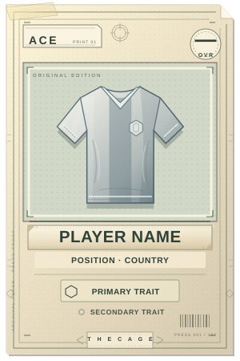
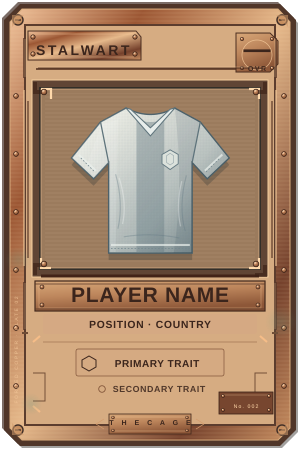
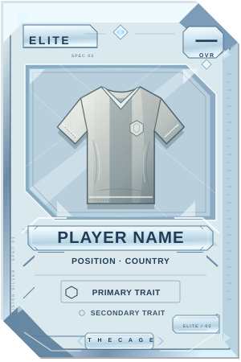
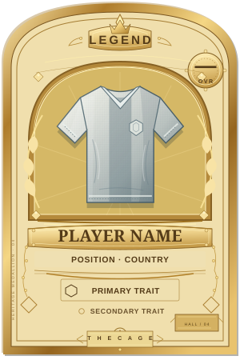
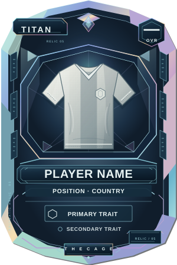

THE CAGE / BASE MODEL STUDIES
FIVE TIERS. FIVE OBJECTS.
Nationality supplies the flag. Tier supplies the object.
The same generic shirt stays in front across all five existing frames.
Loading national flag layers…

Registration marks · press-proof grain

Engine-turned corners · aged patina

Laser grid · prismatic edge

Radial guilloche · engraved laurel

Crystal facets · spectral seams